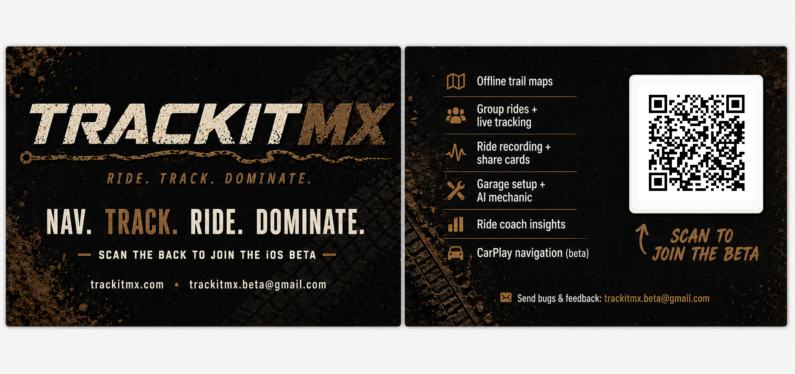

Product overview, platform info, FAQs, and beta contact.
Informational site for the App Store launch path
Off-road navigation, ride recording, and ride review in one system.
TrackItMX is built for riders who want one place to get to the trail, record the day reliably, review what actually happened, and ride with their crew without the product feeling stitched together.
Offline trail maps
Trusted ride recording
Watch companion
CarPlay beta
Group ride visibility
Believable coaching

Support URL
trackitmx.com/support/
Launch-ready help center, FAQs, troubleshooting, and contact info.
Privacy URL
trackitmx.com/privacy/
Data use, cloud features, permissions, and request paths in plain language.
Route to the trail.
Record the ride.
Review what changed.
Ride again next weekend.
App Store-ready basics
The core launch links are now easy to point to.
Troubleshooting, frequently asked questions, and support email links.
Launch-friendly privacy policy aligned to current beta features and services.
Product info
What TrackItMX is trying to do well.
This is not a generic fitness app. TrackItMX is aimed at off-road riders who care about usable navigation, dependable recording, and post-ride reads that stay honest.
Premium trail-first navigation
Trail lookup, routing, destination flow, and map behavior designed around riding instead of general-purpose city driving.
Ride capture riders can trust
Stable ride saves, background resilience, and a product philosophy that treats ride integrity as more important than novelty.
Coaching that explains itself
Insight language built around corner setup, traction, drive, and consistency rather than fake precision or hypey AI sludge.
Group rides with one clear rider signal
Create or join rooms, see live riders, and keep presence readable instead of flickery or confusing.
Apple Watch companion support
Use the watch as a companion and optional live source path while TrackItMX keeps working on watch trust and fallback behavior.
Bike memory, setup context, and premium depth
The long-term stack includes garage setup history, ride memory, cloud backup, compare windows, and progress over time.
Platforms
Built around iPhone, Apple Watch, and CarPlay.
The current experience is centered on iPhone, with Apple Watch companion flows and CarPlay navigation features in active beta work. The product is local-first for core use, with cloud layers added where they unlock real value.
Trail discovery, routing, ride recording, ride review, garage, and support surfaces.
Optional companion telemetry, health signals if enabled, and live-source experiments.
Rider-friendly navigation posture for getting to the trail and staying oriented on the way.
FAQ
Questions riders usually ask first.
Is TrackItMX on the App Store yet?
This site is set up for the App Store launch path, but TrackItMX is still in active beta. Use the beta email on this site if you want access or launch updates.
Do I need an account to use TrackItMX?
Core product direction is local-first. Some cloud features may use anonymous backend identities or optional account layers, but the product is not meant to force signup before it proves value.
Does TrackItMX work without cell service?
Some navigation and ride flows are designed for low-service environments. Cloud-backed features like live rooms, public sharing, or restore pipelines still depend on network access.
What does the app actually track?
Depending on the features you use, TrackItMX may handle location, ride telemetry, saved ride details, optional watch/health signals, group ride room presence, and basic usage analytics. The privacy page explains the current beta scope.
How do I get help or report a bug?
Use trackitmx.beta@gmail.com or open the full support page for troubleshooting and support guidance.
Support
Need help, launch links, or troubleshooting?
The support page is where to send riders, testers, or App Store reviewers who need FAQs, support contact info, and basic setup help.
Go To SupportPrivacy
Need the policy and data-request path?
The privacy page covers location, telemetry, cloud backup, group ride, analytics, optional health data, and how people can contact you about privacy requests.
Go To PrivacyBeta inbox
Keep the contact path simple for now.
Every support and beta action on the site already points to your current inbox: trackitmx.beta@gmail.com.